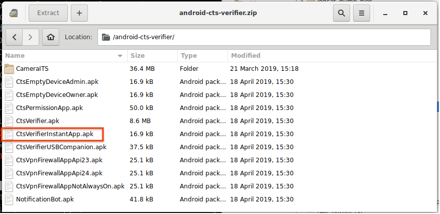
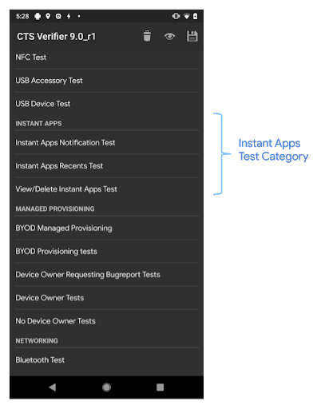
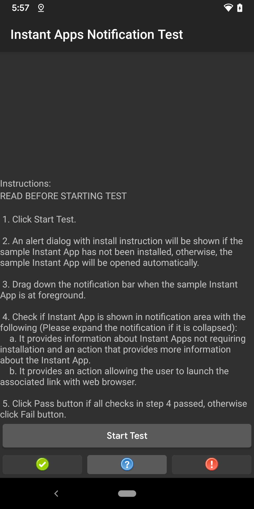
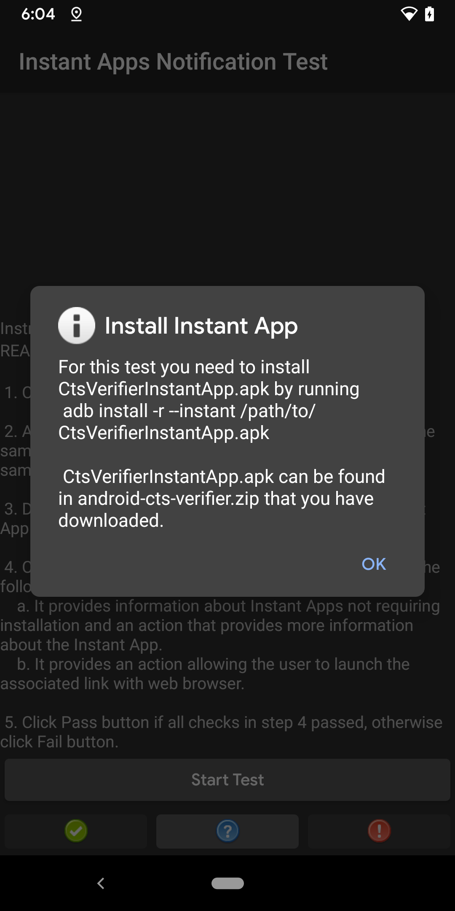
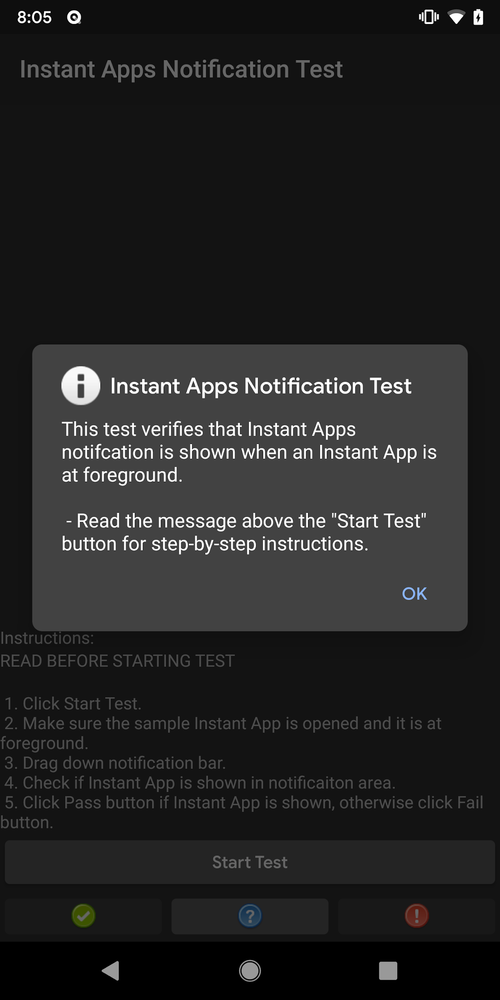

CTS Verifier for Instant Apps increases Android Compatibility test coverage for Instant Apps by using CTS Verifier to test features that can't be fully automated due to OEM- specific UIs, such as system UIs.
Before running CTS Verifier for Instant Apps, ensure that you have the following equipment:
CtsVerifierInstantApp.apk and the CTS verifier are included in
android-cts-verifier.zip, which can be found by logging in to the
Q-EAP dashboard.

Figure 1. Installing Instant App on DUT
The partners can manually build the CTS Verifier to build CTS to incorporate or test out new fixes.
To manually build CtsVerifierInstantApp.apk. issue the following command on the host:
make CtsVerifierInstantApp
To install CtsVerifierInstantApp.apk, issue the following commands on host.
adb install -r --instant CtsVerifierInstantApp.apk
adb install -r --instant /path/to/CtsVerifierInstantApp.apk
The three system UI tests are displayed in the home screen under the Instant Apps test category.

Figure 2. Home screen
When you tap a test under the Instant Apps test category, a test screen opens for the test. The test screen contains the following:
Tapping the Start Test button launches the sample Instant App.

Figure 3. Test screen
The first time you tap the Start Test, an alert dialog opens with instructions for installing the sample Instant App (Figure 4). If the sample Instant App is already installed, this dialog isn't shown for other instant app tests.

Figure 4. Install instruction dialog
Tapping the Help button opens a pop-up dialog with description of the test.

Figure 5. Help pop-up dialog